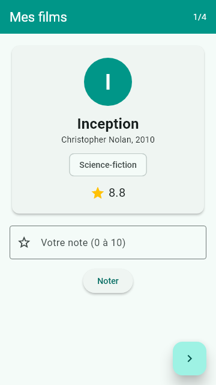
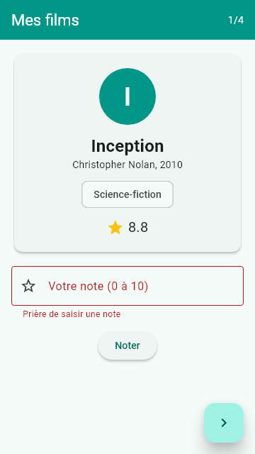
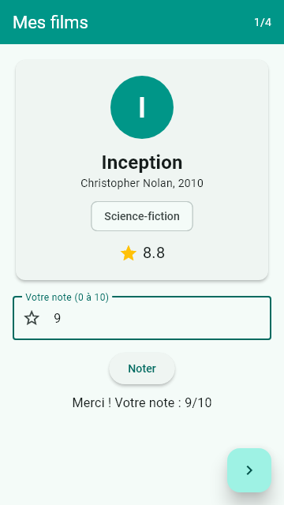

Examen blanc pratique
Votre contrôle sera pratique : une application simple à réaliser avec les techniques de la première partie du module. Voici un sujet de 20 points dans ce style, avec un corrigé complet testé et des captures d'écran. Chronométrez-vous et écrivez le code sans regarder.
Chronomètre (durée indicative : 1 heure)
60:00
Je ne connais pas la durée ni le sujet réel de votre test. Ce sujet est construit à partir du cours et du travail à rendre : classe, liste, interface, bouton flottant, formulaire validé.
Préparation que le professeur a demandée
Le message du professeur dit de faire le travail à rendre sur Moodle avant la prochaine séance : c'est l'application Ma Bibliothèque, corrigée sur la page TP et exercices corrigés. Refaites-la seul : le test ressemblera très probablement à ce travail.
Sujet : application « Mes films » (20 points)
Partie 1 : Dart (4 points)
- (2 points) Créer une classe
Filmavec les attributstitre,realisateur,annee,note(sur 10) etgenre, et un constructeur qui initialise tous les attributs. - (1 point) Créer une liste de quatre films.
- (1 point) Écrire une fonction
moyenneNotes(List<Film>)qui renvoie la moyenne des notes (0 si la liste est vide).
Partie 2 : interface (9 points)
- (2 points)
MaterialApp,Scaffold, et uneAppBarcolorée de titre « Mes films ». - (4 points) Afficher un film à la fois dans une
Card: unCircleAvataravec la première lettre du titre, le titre en gras, le réalisateur et l'année, le genre dans unChip, la note avec une icône étoile. - (3 points) Un
FloatingActionButtonaffiche le film suivant ; après le dernier film, retour au premier.
Partie 3 : formulaire (4 points)
- (2 points) Sous la carte, un
TextFormField« Votre note (0 à 10) » et un bouton « Noter », dans unForm. - (2 points) Validation : refuser une valeur vide, non numérique ou hors de 0 à 10. Si la note est valide, afficher « Merci ! Votre note : 9/10 ».
Partie 4 : questions de cours (3 points)
- (1 point) Quelle est la différence entre
marginetpadding? - (1 point) Pourquoi cette application doit-elle être un
StatefulWidget? Que se passe-t-il si on oubliesetState? - (1 point) Quelle est la différence entre hot reload et hot restart ?
Corrigé



Parties 1 à 3 : code complet
Solution testée (examen_app.dart)
import 'package:flutter/material.dart';
// Corrigé de l'examen blanc : application "Mes films"
// Lancer : flutter run -t lib/main_examen.dart
// ---------------------------------------------------------------- Partie 1 : Dart
class Film {
final String titre;
final String realisateur;
final int annee;
final double note; // sur 10
final String genre;
const Film({
required this.titre,
required this.realisateur,
required this.annee,
required this.note,
required this.genre,
});
}
const List<Film> films = [
Film(titre: 'Inception', realisateur: 'Christopher Nolan', annee: 2010, note: 8.8, genre: 'Science-fiction'),
Film(titre: 'Parasite', realisateur: 'Bong Joon-ho', annee: 2019, note: 8.5, genre: 'Thriller'),
Film(titre: 'Le Roi Lion', realisateur: 'Roger Allers', annee: 1994, note: 8.3, genre: 'Animation'),
Film(titre: 'Intouchables', realisateur: 'Olivier Nakache', annee: 2011, note: 8.5, genre: 'Comédie'),
];
/// Moyenne des notes (0 si la liste est vide).
double moyenneNotes(List<Film> liste) {
if (liste.isEmpty) return 0;
double somme = 0;
for (final f in liste) {
somme += f.note;
}
return somme / liste.length;
}
/// Le film le mieux noté (le premier en cas d'égalité).
Film meilleurFilm(List<Film> liste) {
Film meilleur = liste.first;
for (final f in liste) {
if (f.note > meilleur.note) meilleur = f;
}
return meilleur;
}
// ---------------------------------------------------------------- Parties 2 et 3 : interface
class MesFilmsApp extends StatelessWidget {
const MesFilmsApp({super.key});
@override
Widget build(BuildContext context) {
return MaterialApp(
debugShowCheckedModeBanner: false,
title: 'Mes films',
theme: ThemeData(colorSchemeSeed: Colors.teal),
home: const EcranFilms(),
);
}
}
class EcranFilms extends StatefulWidget {
const EcranFilms({super.key});
@override
State<EcranFilms> createState() => _EcranFilmsState();
}
class _EcranFilmsState extends State<EcranFilms> {
int _index = 0;
String _message = '';
final _formKey = GlobalKey<FormState>();
final _noteController = TextEditingController();
void _filmSuivant() {
setState(() {
_index = (_index + 1) % films.length;
_message = ''; // on efface le message du film précédent
_noteController.clear();
});
}
String? _validerNote(String? valeur) {
if (valeur == null || valeur.isEmpty) return 'Prière de saisir une note';
final double? note = double.tryParse(valeur);
if (note == null || note < 0 || note > 10) return 'La note doit être entre 0 et 10';
return null;
}
void _noter() {
if (_formKey.currentState!.validate()) {
setState(() {
_message = 'Merci ! Votre note : ${_noteController.text}/10';
});
}
}
@override
void dispose() {
_noteController.dispose();
super.dispose();
}
@override
Widget build(BuildContext context) {
final Film film = films[_index];
return Scaffold(
appBar: AppBar(
backgroundColor: Colors.teal,
foregroundColor: Colors.white,
title: const Text('Mes films'),
actions: [
Padding(
padding: const EdgeInsets.only(right: 16),
child: Center(child: Text('${_index + 1}/${films.length}')),
),
],
),
body: SafeArea(
child: SingleChildScrollView(
padding: const EdgeInsets.all(16),
child: Column(
children: [
Card(
child: Padding(
padding: const EdgeInsets.all(20),
child: Column(
children: [
CircleAvatar(
radius: 40,
backgroundColor: Colors.teal,
child: Text(
film.titre[0],
style: const TextStyle(fontSize: 36, color: Colors.white),
),
),
const SizedBox(height: 12),
Text(
film.titre,
style: const TextStyle(fontSize: 24, fontWeight: FontWeight.bold),
),
Text('${film.realisateur}, ${film.annee}'),
const SizedBox(height: 8),
Chip(label: Text(film.genre)),
const SizedBox(height: 8),
Row(
mainAxisAlignment: MainAxisAlignment.center,
children: [
const Icon(Icons.star, color: Colors.amber),
const SizedBox(width: 6),
Text('${film.note}', style: const TextStyle(fontSize: 20)),
],
),
],
),
),
),
const SizedBox(height: 16),
Form(
key: _formKey,
child: Column(
children: [
TextFormField(
controller: _noteController,
keyboardType: TextInputType.number,
decoration: const InputDecoration(
labelText: 'Votre note (0 à 10)',
prefixIcon: Icon(Icons.star_border),
border: OutlineInputBorder(),
),
validator: _validerNote,
),
const SizedBox(height: 12),
ElevatedButton(onPressed: _noter, child: const Text('Noter')),
const SizedBox(height: 8),
Text(_message, style: const TextStyle(fontSize: 16)),
],
),
),
],
),
),
),
floatingActionButton: FloatingActionButton(
onPressed: _filmSuivant,
child: const Icon(Icons.navigate_next),
),
);
}
}| Question | Points clés attendus |
|---|---|
| 1.1 | Classe Film, cinq attributs final, constructeur avec this. ou paramètres nommés required. |
| 1.2 et 1.3 | Liste de quatre Film. Moyenne = somme des notes divisée par le nombre de films, avec le cas de la liste vide (division par zéro évitée). Valeur obtenue : 8.525. |
| 2.1 | MaterialApp puis Scaffold puis AppBar(backgroundColor: ..., title: Text(...)). |
| 2.2 | Card contenant un Padding (la Card n'a pas de padding) et une Column : CircleAvatar, Text en gras, Chip, Row avec Icon. |
| 2.3 | StatefulWidget, variable _index, setState et (_index + 1) % films.length. |
| 3.1 et 3.2 | Form avec GlobalKey<FormState>, TextFormField avec validator, validate() au clic, double.tryParse pour refuser le non numérique. |
Partie 4 : réponses
margin: espace autour du conteneur, à l'extérieur.padding: espace entre le bord du conteneur et son enfant, à l'intérieur.- Le film affiché change quand on clique : le numéro du film est un état, donc un
StatefulWidget(unStatelessWidgetne change jamais après sa création). SanssetState, la variable change mais Flutter ne reconstruit pas l'écran : l'affichage reste le même. - Hot reload injecte le code modifié et conserve l'état (la saisie, le compteur). Hot restart redémarre l'application et réinitialise l'état. Run lance l'application depuis le début.
Barème d'auto-évaluation
Comptez vos points. En dessous de 14, refaites le travail à rendre et les widgets de la page Widgets en images. Entre 14 et 17, relisez les pièges. Au-dessus, passez aux QCM du chapitre « Lire le code ».